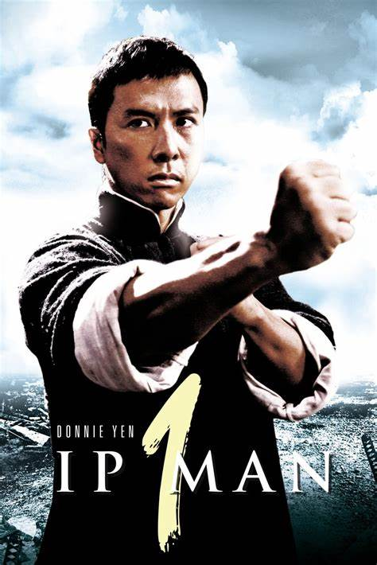

Star Wars: Episodio III - La venganza de los Sith es una película de space opera estadounidense, escrita y dirigida por George Lucas.
Fue la sexta película estrenada de la saga de Star Wars, siendo la tercera en la trilogía de precuelas.
Es la primera película de Star Wars para ser clasificado "PG-13
The Dark Knight
Basada en el personaje Batman de DC Comics, la película es la segunda parte de la serie fílmica Batman de Nolan y una secuela de Batman Begins de 2005,
protagonizada por Christian Bale, Michael Caine, Heath Ledger, Gary Oldman, Aaron Eckhart, Maggie Gyllenhaal y Morgan Freeman.
Con la ayuda del teniente de policía James Gordon y el recientemente elegido fiscal del distrito Harvey Dent, Batman eleva la apuesta en su guerra contra el crimen al proponerse desmantelar los grupos mafiosos restantes que plagan las calles.
La sociedad es efectiva, hasta que la mafia lo arrastra al combate para evitar que un lunático criminal conocido como Joker —el Guasón en Hispanoamérica— desate un reino de caos que sumiría a Gotham City en el caos.

Ip Man
Ip Man es una película China de artes marciales semi biográfica China del 2008 inspirada en la vida de Ip Man, un gran maestro del arte marcial Wing Chun y la primera persona en enseñar este arte en forma abierta.
Uno de sus estudiantes fue el aclamado y muy influyente artista de artes marciales y actor cinematográfico Bruce Lee.
La película trata sobre eventos en la vida de Ip que supuestamente se desarrollaron en la ciudad de Foshan durante la Segunda Guerra Sino-Japonesa.